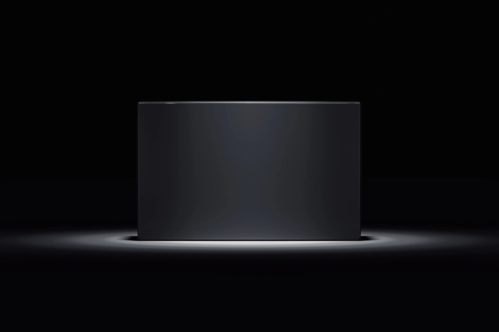
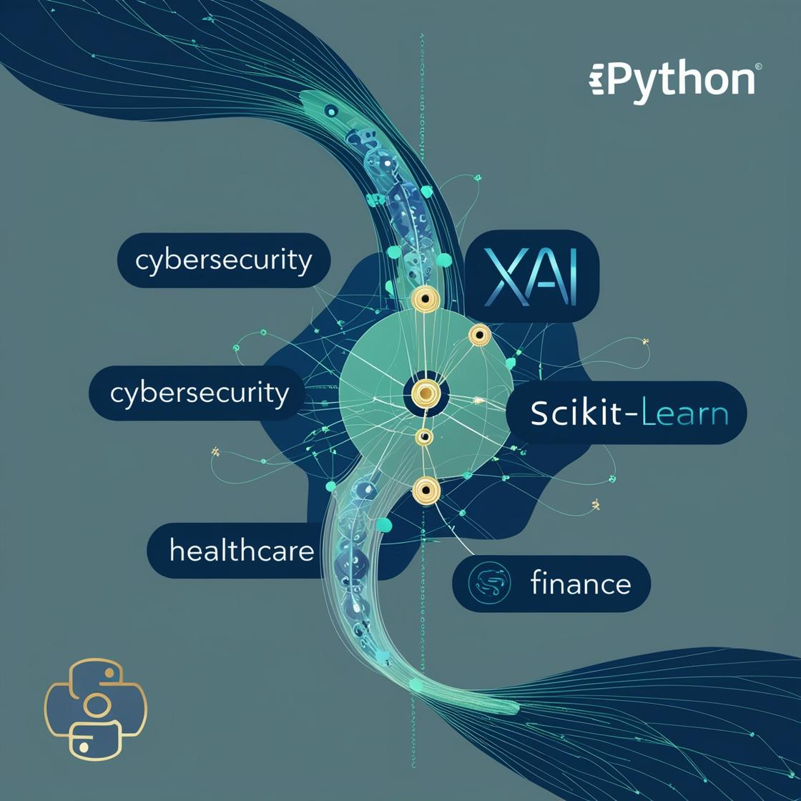
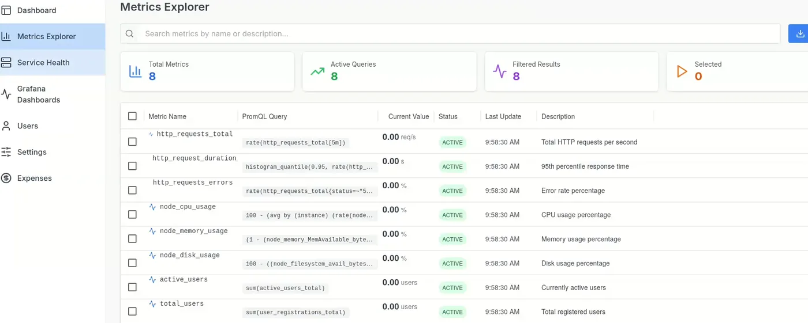
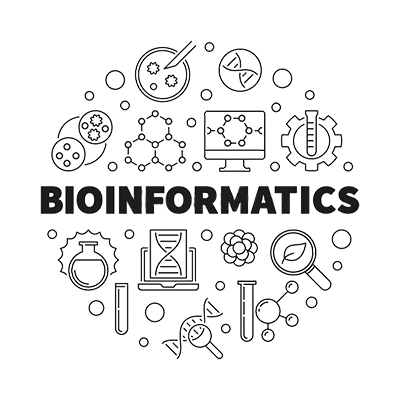

Open source - 2026
OpenHanji
Open-source document infrastructure for building structured document-processing workflows.
View documentation ↗
Across AI, developer tools, cloud systems, and mobile applications.
Open source - 2026
Open-source document infrastructure for building structured document-processing workflows.
View documentation ↗
Open source - 2025
A Python package for recording and organizing training runs, metrics, and results.
View documentation ↗
Computer vision - 2025
A FastAPI service for detecting defects in printed circuit boards with YOLOv5 models.
View source ↗
Cloud security - 2025
A NestJS API that collects AWS CloudTrail security events into PostgreSQL for authenticated querying and scheduled monitoring.
View source ↗
Observability - 2025
A full-stack monitoring platform for inspecting metrics, service health, and operational information.
View source ↗
Open source - 2023-2024
An interactive tutorial and toolkit using sequence analysis and visualization to teach Python.
View source ↗
Mobile application - 2023
A cross-platform mobile application built with Flutter.
View source ↗Natural Language Processing (NLP) - 2022
A conversational assistant built with Python and TensorFlow for natural-language interactions.
View source ↗
Computer Vision (Medical Imaging) - 2021
A cloud-based medical image analysis platform using deep learning to assist breast cancer detection from mammograms.
View research ↗